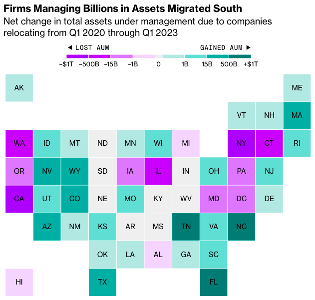
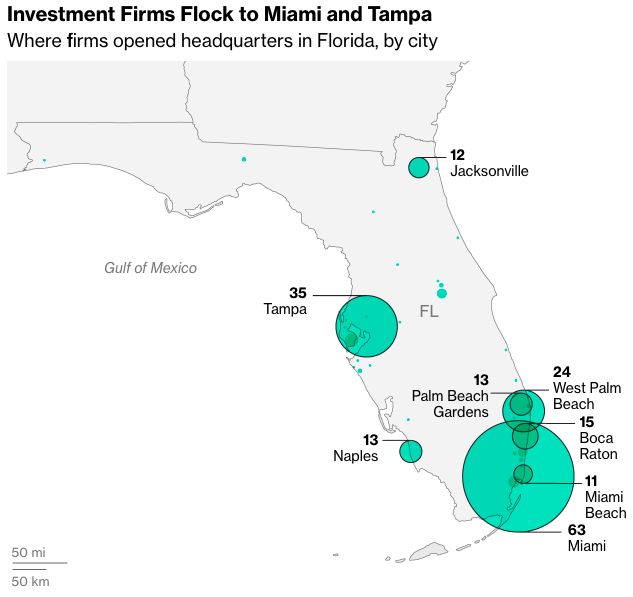

Uses: Adobe Illustrator, R, QGIS
I used Illustrator and R to create this cartogram showing how much each US state gained or lost in assets under management between 2020 and 2023.
I used QGIS and Illustrator to map how many firms moved to various cities in Florida between 2020 and 2023.
